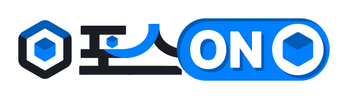

아이디는 관리자가 만들어 전달합니다. 암호는 사내 공통 암호 1개입니다.
아이디와 공통 암호는 관리자에게 받으세요. 가입 신청은 따로 없습니다. 암호는 전 직원이 같은 것을 씁니다 — 회사 밖으로 알려주지 마세요.
분류를 고르면 자주 쓰는 항목이 나옵니다. 필요한 것만 남기고 체크를 푸세요. 없는 항목은 아래에서 새로 만들면 다음부터 목록에 남습니다.
내용은 전원이 봅니다 (기본값). 아래에서 이 업무를 실제로 맡을 사람을 고르면 그 사람들에게만 알림이 갑니다. 여러 명 동시에 고를 수 있습니다.